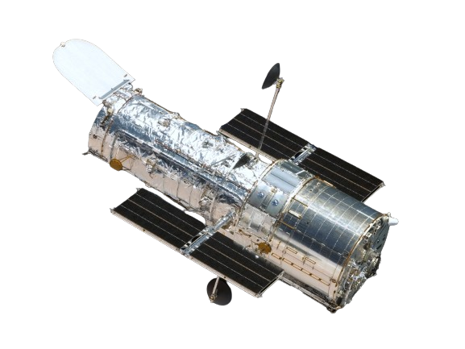

Credit: NASA / STS-125, Space Shuttle Atlantis, Ruffnax (Crew of STS-125)
Fun Facts
The Hubble was named after a famous astroomer, Edwin Hubble.
Hubble can only take gray-scale pictures, so atronomers use multiple different filters to capture red, blue, and green light and combine them to create the photos we see.
The Hubble is really heavy, at around 11,110 kg.
Although the Hubble might seem stationary, it is actually orbiing Earth at around 8 km/s. This speed allows Hubble to complete an orbit around Earth approximately every 95 minutes
Because light takes so long to reach us, Hubble is actually taking pictures of galaxies in the past.